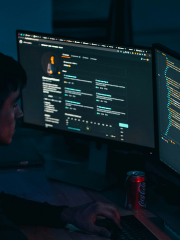

Mitt namn är Samuel

Hej och Välkommen
Jag är en gymnasieelev med ett stort intresse för att skapa, utvecklas och lära mig nya saker. Just nu befinner jag mig i en fas där jag utforskar mina styrkor och intressen, och den här portfolion är en del av den resan. För mig handlar det inte bara om resultat, utan också om processen bakom att testa idéer, lösa problem och hela tiden bli lite bättre än igår.
Jag håller ständigt på att utveckla mina färdigheter och vågar utmana mig själv i nya projekt. Genom skolarbeten och egna initiativ får jag möjlighet att kombinera kreativitet med struktur och tänka både fritt och lösningsorienterat. Varje projekt jag jobbar med är en chans att lära mig något nytt och att växa, både inom mitt område och som person.
Som person är jag nyfiken, engagerad och målmedveten. Jag gillar att samarbeta, ta ansvar och lägga ner tid på detaljer för att nå ett resultat jag kan vara stolt över. Den här portfolion visar var jag är just nu men också riktningen jag är på väg mot. Det här är bara början på min utveckling.
Interavktiv färgväxlare
Klicka på knapparna nedan för att ändra temafärgen på sidan
Vad jag skapat

Bygga Spel
Jag arbetar med att skapa egna spel genom programmering. I mina projekt designar jag spelmekanik, skriver kod och testar funktioner för att få spelet att fungera. Målet är att utveckla mina kunskaper inom både programmering och spelutveckling.

Programering
Jag arbetar med olika programmeringsprojekt där jag utvecklar och testar mina kunskaper inom kodning och problemlösning. Projekten kan innehålla allt från enkla program till mer avancerade lösningar där jag använder olika programmeringsspråk och tekniker. Målet är att lära mig mer om hur man bygger fungerande och effektiva digitala lösningar.

Framtidsplaner
I framtiden vill jag fortsätta utveckla mina kunskaper inom programmering och spelutveckling. Jag planerar att lära mig fler programmeringsspråk och arbeta med större projekt. Mitt mål är att kunna jobba med teknik eller spelutveckling i framtiden.